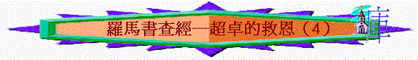

引言：今日我們查考基督徒的盼望； 最近有什麼事情你十分盼望？ 我們嘗試從羅 8:17-31看一看信主後的盼望
個人讀經：8:17-31
四．超卓的盼望（
8:17-31）１．我們的身份（
8:17-25）ａ．
V17題到信主後我們得到〔後嗣〕身份，什麼叫做後嗣？
ｂ．同世人的後嗣有什麼相同之處？ 又有什麼不同／超 越的地方？
ｃ．有了這身份後，我們會得到什麼？ 聖經怎樣說？
２．將來的榮耀（
8:18-25）ａ．V18〔我〕指誰？ 他有什麼的苦楚？ 但他的反應有什麼令我們驚訝的 地方？ 為什麼有這樣回應？
ｂ．在現實生活中有否試過他的經歷？（有苦楚，但最後可稍微不足介意）
ｃ．另外ｖ
19-22，受造之物指什麼？ 他們有什麼苦況？ 在今世可否解 決？ 何以見得？
ｄ．
V19題到他們切望什麼？ 〔神的眾子顯出來〕指什麼？ 這日來臨，他們會得什麼？ 這〔自由〕我們今世可否100%完全經歷？
ｅ．
V23〔就是我們這有聖靈初結果子的〕指誰？ 我們有什麼苦況？ 最近有什麼事情令你感到歎息？ 這日來臨我們又會得什麼？ 什麼叫做〔身體得贖〕？小結：基督徒得的榮耀優越的地方．．．．
＊但今天我們的盼望來了沒有？ 聖經教我們怎樣迎接那盼望？ 坦白說，我們要持續用這種心態過在世的日子， 難不難？ ｗｈｙ？ 神又如何幫我們呢？
２．現今的支柱（8:26-31）
ａ．V26 題到什麼幫助？ 這種禱告有什麼好處？ 有沒有經歷過軟弱至不曉得怎樣禱告的情況？ 如何經過？
ｂ．V28題到〔愛神的人〕指誰？ 我們有沒有份？ 另外，神在我們身上有什麼計劃？ 神如何幫助我們達到？
ｃ．有沒有經歷過一些事情當初覺得不好，後來發現是益處？
ｄ．〔既是這樣〕指什麼？ 保羅因此產生什麼信念？
總結：我們從經文中學到什麼事情？ 經文又對我有什麼提醒？
下次查經：超卓的生活──信耶穌後應有什麼生活？羅12